Group 15 Elements
Group 15 includes nitrogen, phosphorus, arsenic, antimony and bismuth. As we go down the group, there is a shift from non-metallic to metallic through metalloidic character. Nitrogen and phosphorus are non-metals, arsenic and antimony metalloids and bismuth is a typical metal.
Occurrence:
Molecular nitrogen comprises 78% by volume of the atmosphere.
In the earth’s crust, it occurs as sodium nitrate, NaNO3 (called Chile
saltpetre) and potassium nitrate (Indian saltpetre). It is found in the
form of proteins in plants and animals. Phosphorus occurs in minerals
of the apatite family, Ca9(PO4)6. CaX2 (X = F, Cl or OH) (e.g., fluorapatite
Ca9(PO4)6. CaF2>) which are the main components of phosphate rocks.
Phosphorus is an essential constituent of animal and plant matter. It
is present in bones as well as in living cells. Phosphoproteins are present
in milk and eggs. Arsenic, antimony and bismuth are found mainly as
sulphide minerals.Trends of some of the atomic, physical and chemical properties of the
group are discussed below.
Electronic Configuration:
The valence shell electronic configuration of these elements is ns2np3.
The s orbital in these elements is completely filled and p orbitals are
half-filled, making their electronic configuration extra stable.
Atomic and Ionic Radii:
Covalent and ionic (in a particular state) radii increase in size
down the group. There is a considerable increase in covalent radius
from N to P. However, from As to Bi only a small increase in
covalent radius is observed. This is due to the presence of
completely filled d and/or f orbitals in heavier members.
Ionisation Enthalpy:
Ionisation enthalpy decreases down the group due to gradual increase
in atomic size. Because of the extra stable half-filled p orbitals electronic
configuration and smaller size, the ionisation enthalpy of the group 15
elements is much greater than that of group 14 elements in the
corresponding periods. The order of successive ionisation enthalpies,
as expected is ΔH1 < ΔH2 < ΔH3
Electronegativity:
The electronegativity value, in general, decreases down the group with
increasing atomic size. However, amongst the heavier elements, the
difference is not that much pronounced.
Physical Properties: All the elements of this group are polyatomic. Dinitrogen is a diatomic gas while all others are solids. Metallic character increases down the group. Nitrogen and phosphorus are non-metals, arsenic and antimony metalloids and bismuth is a metal. This is due to decrease in ionisation enthalpy and increase in atomic size. The boiling points, in general, increase from top to bottom in the group but the melting point increases upto arsenic and then decreases upto bismuth. Except nitrogen, all the elements show allotropy.
Chemical Properties:
Oxidation states and trends in chemical reactivity:
The common oxidation states of these elements are –3, +3 and +5.
The tendency to exhibit –3 oxidation state decreases down the group due
to increase in size and metallic character. In fact last member of the group,
bismuth hardly forms any compound in –3 oxidation state. The stability
of +5 oxidation state decreases down the group. The only well characterised
Bi (V) compound is BiF5. The stability of +5 oxidation state decreases and
that of +3 state increases (due to inert pair effect) down the group. Nitrogen
exhibits + 1, + 2, + 4 oxidation states also when it reacts with oxygen.
Phosphorus also shows +1 and +4 oxidation states in some oxoacids.
In the case of nitrogen, all oxidation states from +1 to +4 tend to
disproportionate in acid solution. For example,
Similarly, in case of phosphorus nearly all intermediate oxidation
states disproportionate into +5 and –3 both in alkali and acid. However
+3 oxidation state in case of arsenic, antimony and bismuth becomes
increasingly stable with respect to disproportionation.
Nitrogen is restricted to a maximum covalency of 4 since only four
(one s and three p) orbitals are available for bonding. The heavier elements
have vacant d orbitals in the outermost shell which can be used for
bonding (covalency) and hence, expand their covalence as in PF6-.
Anomalous properties of nitrogen:
Nitrogen differs from the rest of the members of this group due to
its small size, high electronegativity, high ionisation enthalpy and
non-availability of d orbitals. Nitrogen has unique ability to form
pπ -pπ multiple bonds with itself and with other elements having
small size and high electronegativity (e.g., C, O). Heavier elements of
this group do not form pπ -pπ bonds as their atomic orbitals are so
large and diffuse that they cannot have effective overlapping.
Thus, nitrogen exists as a diatomic molecule with a triple bond (one
s and two p) between the two atoms. Consequently, its bond enthalpy
(941.4 kJ mol–1) is very high. On the contrary, phosphorus, arsenic
and antimony form single bonds as P–P, As–As and Sb–Sb while
bismuth forms metallic bonds in elemental state. However, the single
N–N bond is weaker than the single P–P bond because of high
interelectronic repulsion of the non-bonding electrons, owing to the
small bond length. As a result the catenation tendency is weaker in
nitrogen. Another factor which affects the chemistry of nitrogen is
the absence of d orbitals in its valence shell. Besides restricting its
covalency to four, nitrogen cannot form dπ –pπ bond as the heavier
elements can e.g.,
R3P = O or R3P = CH2 (R = alkyl group).
Phosphorus and arsenic can form dπ –dπ bond also with transition metals when
their compounds like P(C2H5)3 and
As(C6H5)3 act as ligands.
(i) Reactivity towards hydrogen:
All the elements of Group 15
form hydrides of the type EH3 where E = N, P, As, Sb or Bi.
The hydrides show regular gradation in their properties.
The stability of hydrides decreases from NH3 to BiH3 which can
be observed from their bond dissociation enthalpy.
Consequently, the reducing character of the hydrides increases.
Ammonia is only a mild reducing agent while BiH3 is the
strongest reducing agent amongst all the hydrides. Basicity also
decreases in the order
NH3 > PH3 > AsH3 > SbH3 > BiH3.
(ii)Reactivity towards oxygen:
All these elements form two types
of oxides: E2O3 and E2O5.
The oxide in the higher oxidation state
of the element is more acidic than that of lower oxidation state.
Their acidic character decreases down the group. The oxides of
the type E2O3 of nitrogen and phosphorus are purely acidic,
that of arsenic and antimony amphoteric and those of bismuth
predominantly basic.
(iii) Reactivity towards halogens:
These elements react to form two
series of halides: EX3 and EX5. Nitrogen does not form
pentahalide due to non-availability of the d orbitals in its valence
shell. Pentahalides are more covalent than trihalides. All the
trihalides of these elements except those of nitrogen are stable.
In case of nitrogen, only NF3 is known to be stable. Trihalides
except BiF3 are predominantly covalent in nature.
(iv) Reactivity towards metals:
All these elements react with metals
to form their binary compounds exhibiting –3 oxidation state,
such as, Ca3N2 (calcium nitride) Ca3P2 (calcium phosphide),
Na3As2 (sodium arsenide), Zn3Sb2 (zinc antimonide) and
Mg3Bi2 (magnesium bismuthide).
Dinitrogen
Preparation:
Dinitrogen is produced commercially by the liquefaction and fractional
distillation of air. Liquid dinitrogen (b.p. 77.2 K) distils out first leaving
behind liquid oxygen (b.p. 90 K).
In the laboratory, dinitrogen is prepared by treating an aqueous
solution of ammonium chloride with sodium nitrite.
Small amounts of NO and HNO3 are also formed in this reaction;
these impurities can be removed by passing the gas through aqueous
sulphuric acid containing potassium dichromate. It can also be obtained
by the thermal decomposition of ammonium dichromate.
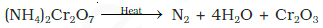
Very pure nitrogen can be obtained by the thermal decomposition
of sodium or barium azide.
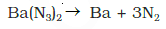
Properties
Dinitrogen is a colourless, odourless, tasteless and non-toxic gas.
Nitrogen atom has two stable isotopes: 14N and 15N. It has a very low
solubility in water (23.2 cm3 per litre of water at 273 K and 1 bar
pressure) and low freezing and boiling points .
Dinitrogen is rather inert at room temperature because of the high
bond enthalpy of N≡N bond. Reactivity, however, increases rapidly with
rise in temperature. At higher temperatures, it directly combines with
some metals to form predominantly ionic nitrides and with non-metals,
covalent nitrides. A few typical reactions are:
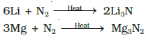
It combines with hydrogen at about 773 K in the presence of a
catalyst (Haber’s Process) to form ammonia:
N2(g) + 3H2(g) → 2NH3(g); ΔfH0= –46.1 kJmol-1
Dinitrogen combines with dioxygen only at very high temperature
(at about 2000 K) to form nitric oxide, NO.
N2 + O2(g) → 2NO(g)
Uses: The main use of dinitrogen is in the manufacture of ammonia and other
industrial chemicals containing nitrogen, (e.g., calcium cyanamide). It also
finds use where an inert atmosphere is required (e.g., in iron and steel industry,
inert diluent for reactive chemicals). Liquid dinitrogen is used as a refrigerant
to preserve biological materials, food items and in cryosurgery.
Ammonia
Preparation:
Ammonia is present in small quantities in air and soil where it is
formed by the decay of nitrogenous organic matter e.g., urea.
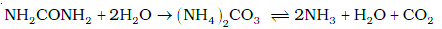
On a small scale ammonia is obtained from ammonium salts which
decompose when treated with caustic soda or calcium hydroxide.
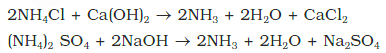
On a large scale, ammonia is manufactured by Haber’s process.
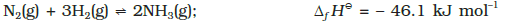
In accordance with Le Chatelier’s principle, high pressure would
favour the formation of ammonia. The optimum conditions for the
production of ammonia are a pressure of 200 × 105 Pa (about 200
atm), a temperature of ~ 700 K and the use of a catalyst such as iron
oxide with small amounts of K2O and Al2O3 to increase the rate of
attainment of equilibrium. Earlier, iron was used as a catalyst with
molybdenum as a promoter.
Properties
In the solid and liquid states, it is associated through hydrogen bonds as in the case of water and that accounts for its higher melting and boiling points than expected on the basis of its molecular mass.
The ammonia molecule is trigonal pyramidal with the nitrogen atom at the apex. It has three bond pairs and one lone pair of electrons as shown in the structure.
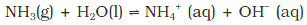
It forms ammonium salts with acids, e.g., NH4Cl, (NH4)2SO4 , etc. As a weak base, it precipitates the hydroxides (hydrated oxides in case of some metals) of many metals from their salt solutions. For example,

The presence of a lone pair of electrons on the nitrogen atom of the ammonia molecule makes it a Lewis base. It donates the electron pair and forms linkage with metal ions and the formation of such complex compounds finds applications in detection of metal ions such as Cu2+, Ag+:
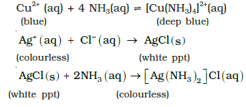
Uses: Ammonia is used to produce various nitrogenous fertilisers (ammonium nitrate, urea, ammonium phosphate and ammonium sulphate) and in the manufacture of some inorganic nitrogen compounds, the most important one being nitric acid. Liquid ammonia is also used as a refrigerant.
Oxides of Nitrogen
Nitrogen forms a number of oxides in different oxidation states. The
names, formulas, preparation and physical appearance of these oxides
are given in Table below:
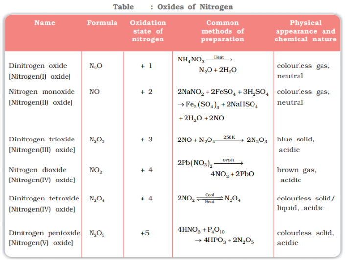
Lewis dot main resonance structures and bond parameters of oxides
are given in Table below:
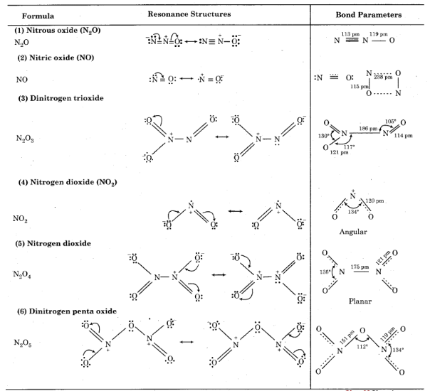
Nitric Acid
Nitrogen forms oxoacids such as H2N2O2 (hyponitrous acid),
HNO2 (nitrous acid) and HNO3 (nitric acid). Amongst them HNO3 is the
most important.
Preparation:
In the laboratory, nitric acid is prepared by heating KNO3 or NaNO3
and concentrated H2SO4 in a glass retort.
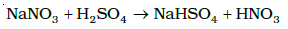
On a large scale it is prepared mainly by Ostwald’s process.
This method is based upon catalytic oxidation of NH3 by atmospheric
oxygen.
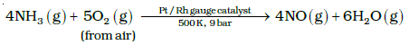
Nitric oxide thus formed combines with oxygen giving NO2.
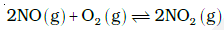
Nitrogen dioxide so formed, dissolves in water to give HNO3.
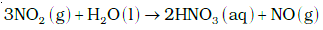
NO thus formed is recycled and the aqueous HNO3 can be
concentrated by distillation upto ~ 68% by mass. Further
concentration to 98% can be achieved by dehydration with
concentrated H2SO4.
In the gaseous state, HNO3 exists as a planar molecule with the structure as shown.
Concentrated nitric acid is a strong oxidising agent and attacks most metals except noble metals such as gold and platinum. The products of oxidation depend upon the concentration of the acid, temperature and the nature of the material undergoing oxidation.
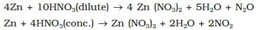
Zinc reacts with dilute nitric acid to give N2O and with concentrated acid to give NO2.
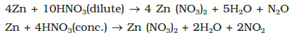
Some metals (e.g., Cr, Al) do not dissolve in concentrated nitric acid because of the formation of a passive film of oxide on the surface.
Concentrated nitric acid also oxidises non–metals and their compounds. Iodine is oxidised to iodic acid, carbon to carbon dioxide, sulphur to H2SO4, and phosphorus to phosphoric acid.
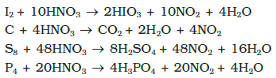
Brown Ring Test: The familiar brown ring test for nitrates depends on the ability of Fe2+ to reduce nitrates to nitric oxide, which reacts with Fe2+ to form a brown coloured complex. The test is usually carried out by adding dilute ferrous sulphate solution to an aqueous solution containing nitrate ion, and then carefully adding concentrated sulphuric acid along the sides of the test tube. A brown ring at the interface between the solution and sulphuric acid layers indicates the presence of nitrate ion in solution.
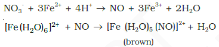
Uses: The major use of nitric acid is in the manufacture of ammonium nitrate for fertilisers and other nitrates for use in explosives and pyrotechnics. It is also used for the preparation of nitroglycerin, trinitrotoluene and other organic nitro compounds. Other major uses are in the pickling of stainless steel, etching of metals and as an oxidiser in rocket fuels.
Phosphorus
Allotropic Forms:
Phosphorus is found in many allotropic forms, the important ones
being white, red and black.

White phosphorus is less stable and therefore, more reactive than the other solid phases under normal conditions because of angular strain in the P4 molecule where the angles are only 60°. It readily catches fire in air to give dense white fumes of P4O10.
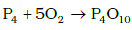
It consists of discrete tetrahedral P4 molecule as shown in figure.
Chemically, red phosphorus is much less reactive than white phosphorus. It does not glow in the dark. It is polymeric, consisting of chains of P4 tetrahedra linked together
Black phosphorus has two forms α-black phosphorus and β-black phosphorus. α-Black phosphorus is formed when red phosphorus is heated in a sealed tube at 803K. It can be sublimed in air and has opaque monoclinic or rhombohedral crystals. It does not oxidise in air. β-Black phosphorus is prepared by heating white phosphorus at 473 K under high pressure. It does not burn in air upto 673 K.
Phosphine
Preparation:
Phosphine is prepared by the reaction of calcium phosphide with water
or dilute HCl.

In the laboratory, it is prepared by heating white phosphorus with
concentrated NaOH solution in an inert atmosphere of CO2.

When pure, it is non inflammable but becomes inflammable owing
to the presence of P2H4 or P4 vapours.
To purify it from the impurities,
it is absorbed in HI to form phosphonium iodide (PH4I) which on treating
with KOH gives off phosphine.

Properties:
It is a colourless gas with rotten fish smell and is highly poisonous.
It explodes in contact with traces of oxidising agents like HNO3, Cl2 and
Br2 vapours.
It is slightly soluble in water. The solution of PH3 in water decomposes
in presence of light giving red phosphorus and H2. When absorbed in
copper sulphate or mercuric chloride solution, the corresponding
phosphides are obtained.
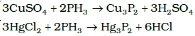
Phosphine is weakly basic and like ammonia, gives phosphonium
compounds with acids e.g.,
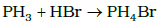
Uses: The spontaneous combustion of phosphine is technically used in Holme’s
signals. Containers containing calcium carbide and calcium phosphide are
pierced and thrown in the sea when the gases evolved burn and serve as a
signal. It is also used in smoke screens.
Phosphorus Halides
Phosphorus forms two types of halides, PX3 (X = F, Cl, Br, I) and
PX5 (X = F, Cl, Br).
Phosphorus Trichloride
Preparation:
It is obtained by passing dry chlorine over heated white phosphorus.
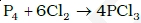
It is also obtained by the action of thionyl chloride with white
phosphorus.
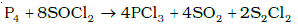
It is a colourless oily liquid and hydrolyses in the presence of moisture.
It reacts with organic compounds containing –OH group such as CH3COOH, C2H5OH.
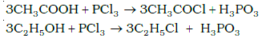
It has a pyramidal shape as shown, in which phosphorus is sp3 hybridised.
Phosphorus Pentachloride
Preparation:
Phosphorus pentachloride is prepared by the reaction of white
phosphorus with excess of dry chlorine.
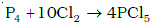
It can also be prepared by the action of SO2Cl2 on phosphorus.
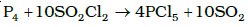
Properties:
PCl5 is a yellowish white powder and in moist air, it hydrolyses to
POCl3 and finally gets converted to phosphoric acid.
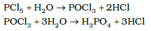
When heated, it sublimes but decomposes on stronger heating.
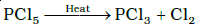
It reacts with organic compounds containing –OH group converting
them to chloro derivatives.
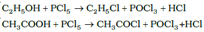
Finely divided metals on heating with PCl5 give corresponding
chlorides.
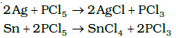
In gaseous and liquid phases, it has a trigonal bipyramidal structure as shown. The three equatorial P–Cl bonds are equivalent, while the two axial bonds are longer than equatorial bonds. This is due to the fact that the axial bond pairs suffer more repulsion as compared to equatorial bond pairs.
In the solid state it exists as an ionic solid, [PCl4]+[PCl6]- in which the cation, [PCl4]+ is tetrahedral and the anion, [PCl6]-octahedral.
Oxoacids of Phosphorus:
Phosphorus forms a number of oxoacids. The important oxoacids of
phosphorus with their formulas, methods of preparation and the
presence of some characteristic bonds in their structures are given
in Table.
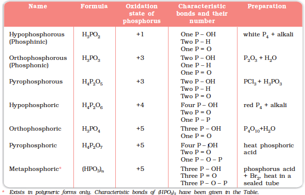
The compositions of the oxoacids are interrelated in terms of loss
or gain of H2O molecule or O-atom.
The structures of some important oxoacids are given below:
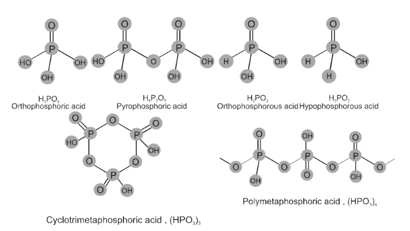
In oxoacids phosphorus is tetrahedrally surrounded by other atoms.
All these acids contain at least one P=O bond and one P–OH bond. The
oxoacids in which phosphorus has lower oxidation state (less than +5)
contain, in addition to P=O and P–OH bonds, either P–P (e.g., in H4P2O6)
or P–H (e.g., in H3PO2) bonds but not both. These acids in +3 oxidation
state of phosphorus tend to disproportionate to higher and lower
oxidation states. For example, orthophophorous acid (or phosphorous
acid) on heating disproportionates to give orthophosphoric acid (or
phosphoric acid) and phosphine.
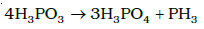
The acids which contain P–H bond have strong reducing properties.
Thus, hypophosphorous acid is a good reducing agent as it contains
two P–H bonds and reduces, for example, AgNO3 to metallic silver.
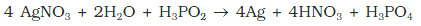
These P–H bonds are not ionisable to give H+ and do not play any
role in basicity. Only those H atoms which are attached with oxygen in
P–OH form are ionisable and cause the basicity. Thus, H3PO3 and
H3PO4 are dibasic and tribasic, respectively as the structure of H3PO3
has two P–OH bonds and H3PO4 three.